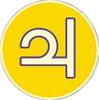

GIOVE
Neurodivergenza
Oltre i confini, la visione si espande.
GLI ABITANTI DEL MIO GIOVE

Silen

La forma di Silen che accoglie ogni diversità.
Silen è la specie ancestrale da cui discendono tutti i visitatori del nostro universo. Nella sua forma giovana si fa grande quanto basta per contenere tutte le diversità del neurosviluppo: la comunicazione che cambia forma, l'attenzione che corre, il corpo che parla prima del pensiero. Una raccolta dedicata alla neurodivergenza in tutte le sue sfumature, da accogliere con meraviglia e rispetto.OGNI LUNA UNA DIVERSA IMMENSITÀ
Ogni luna di Giove racconta una sfumatura della neurodivergenza: la comunicazione, l'attenzione, il corpo che parla.
Esplora le schede dedicate alle diverse forme del neurosviluppo e incontra la tua immensità.
Ogni scheda ha due voci: Cos'è spiega il tema con parole chiare, La luna racconta lo attraversa con la voce del progetto. Sono testi divulgativi: non sostituiscono il parere di un professionista — le storie, vere e proprie, stanno nei libri.

Autismo Livello 1
Il mondo si sente troppo, e si capisce in modo unico.
L'autismo di livello 1 (DSM-5) indica una persona autistica che ha bisogno di un supporto lieve: può comunicare e vivere in autonomia, ma la comunicazione sociale, la flessibilità e le sensibilità sensoriali restano faticose. Non è autismo poco autentico: il livello descrive l'aiuto necessario, non il valore della persona.

Autismo Livello 2
Un bisogno di chiarezza in un mondo confuso.
L'autismo di livello 2 indica un bisogno di supporto sostanziale: difficoltà più marcate nella comunicazione, nelle relazioni e nel gestire i cambiamenti, con sensibilità sensoriali forti. Anche qui, il livello misura l'aiuto necessario, non il valore della persona.

Autismo Livello 3
Comunicare oltre le parole.
L'autismo di livello 3 indica un bisogno di supporto molto sostanziale, anche nelle attività quotidiane: la comunicazione verbale può essere limitata e i cambiamenti molto destabilizzanti. È il livello di supporto più alto descritto dal DSM-5, e richiede reti di cura dedicate.

Sindrome di Tourette
Il corpo che parla prima del pensiero.
La sindrome di Tourette è un disturbo neurologico caratterizzato da tic motori e vocali involontari che compaiono nell'infanzia. Non è maleducazione né una scelta: i tic possono aumentare con lo stress e attenuarsi con la crescita, e esistono percorsi di cura specifici.

ADHD
L'attenzione che non sta ferma, ma sa dove andare.
L'ADHD — in clinica, disturbo da deficit di attenzione/iperattività — è una condizione neurosviluppativa che rende difficile regolare attenzione, impulsività e livello di attività. Non è pigrizia: il cervello organizza le priorità in modo diverso, e struttura, strategie e a volte farmaci fanno la differenza.

Alessitimia
Emozioni che chiedono un nome.
L'alessitimia è la difficoltà a riconoscere, distinguere e descrivere le proprie emozioni. Non è un disturbo dell'umore né freddezza: è una caratteristica, spesso associata ad altre condizioni, che rende le emozioni difficili da mettere in parole.
INFORMAZIONI E LICENZE
Le opere esposte sono tutelate da diritto d'autore. Per collaborazioni, richieste professionali o per consultare il catalogo delle licenze autorizzate, puoi trovarmi qui:
Ogni riproduzione non autorizzata è vietata.